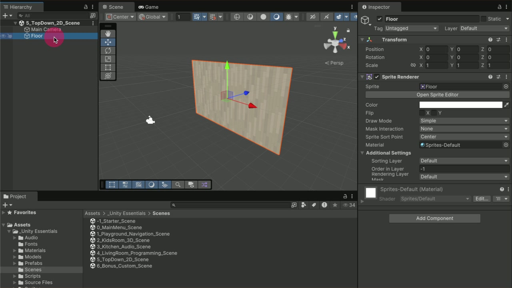
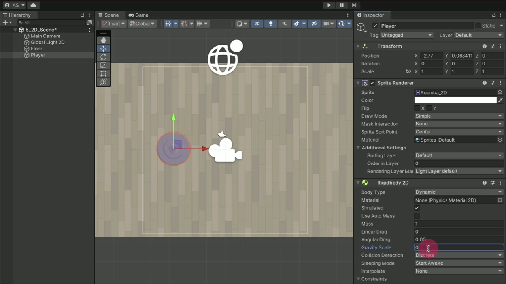
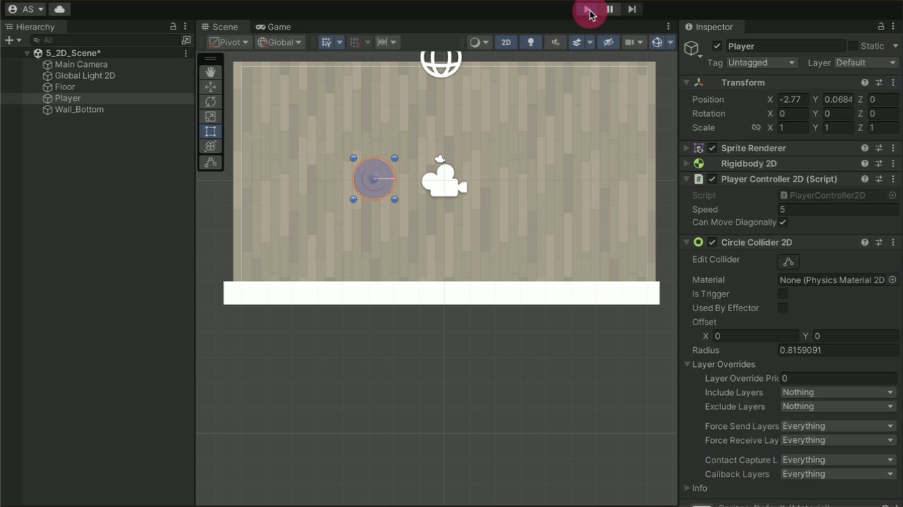
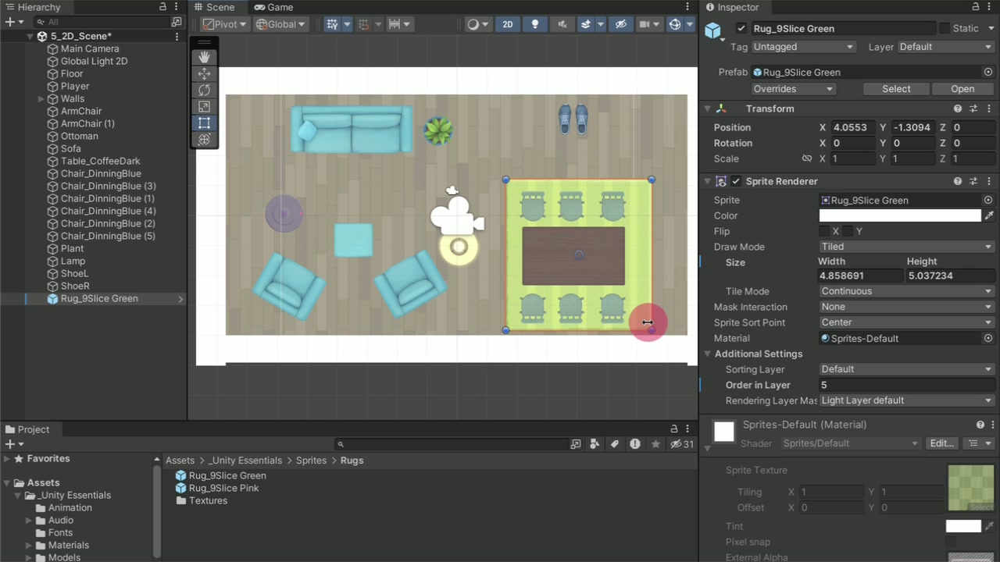
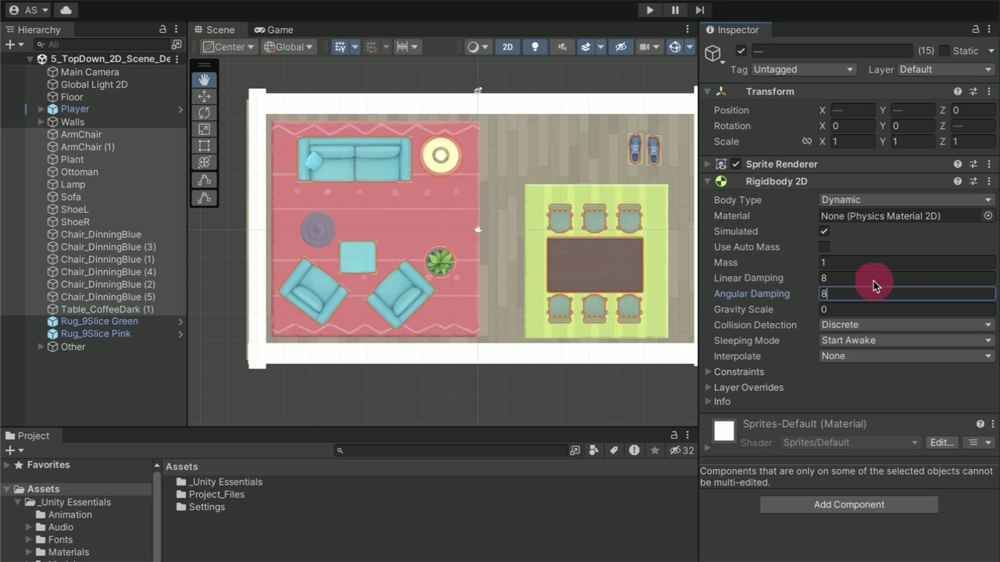
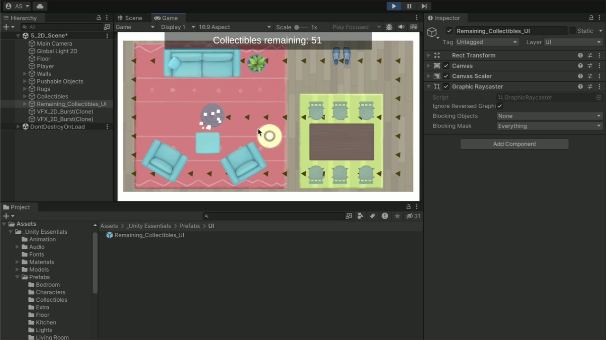
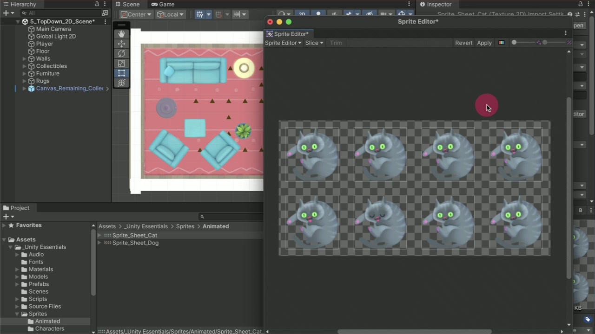
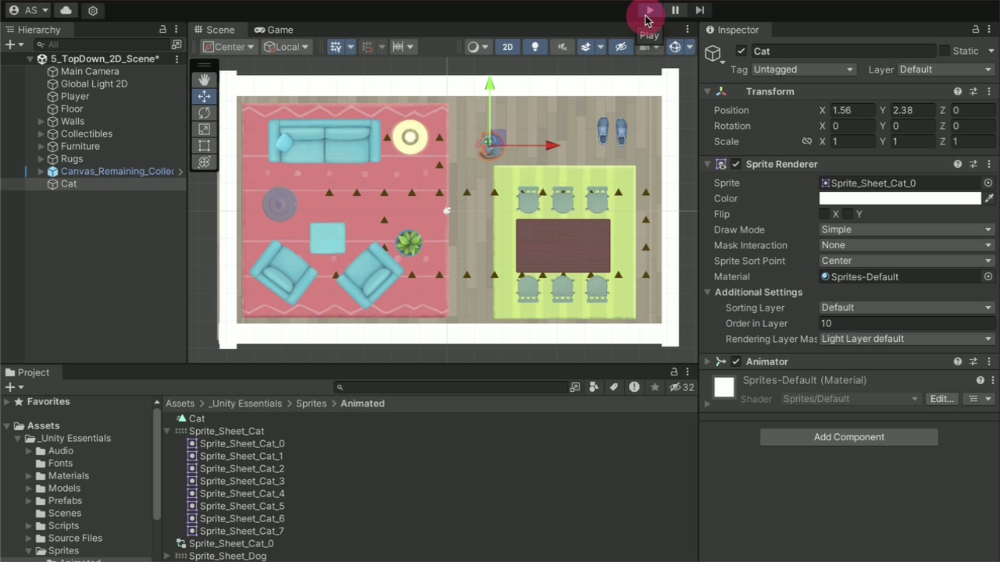

Make a 2D room that behaves as clearly as it looks.
Build a top-down collection puzzle, then explain which component controls each visible result. Continue from the component and trigger model in Lecture 04.
- Separate Scene view navigation from camera projection.
- Configure 2D movement, boundaries, and pushable objects.
- Control sprite stacking without changing physics.
- Compare mass, linear damping, and angular damping.
- Connect 2D pickups to visible progress feedback.
- Slice a sprite sheet and create an animated, physical pet.
Read the scene in two dimensions
A sprite is an image used as a visible game element. Its GameObject still has a Transform with X, Y, and Z coordinates. This room uses the XY plane for play; Z still exists. The Scene view’s 2D button changes how you edit the scene. The Main Camera controls what the player sees.
- Open _Unity Essentials > Scenes > 5_TopDown_2D_Scene in the existing Essentials project. Find Main Camera and Floor in the Hierarchy window.
- Frame Floor by double-clicking it. Briefly orbit with Alt + left-drag (macOS: Option + left-drag) to inspect the flat surface. Enable the Scene view 2D button. Pan and zoom; orbiting is disabled.
- Inspect Main Camera: this starter scene uses Orthographic projection. Open Game view and select 16:9. Resize the view and observe the composition.
| Control | Responsibility | What it does not do |
|---|---|---|
| Scene view 2D | Aligns the editing view to the XY plane | Does not convert 3D physics components to 2D |
| Camera projection | Orthographic viewing keeps apparent size independent of depth | Does not create a collision boundary |
| Game view 16:9 | Tests the intended width-to-height ratio | Does not by itself enforce a build’s display policy |

Test the result
Switch the Scene view between 2D and 3D while leaving the camera unchanged. Explain why Game view retains its camera view.
Configure the player and test gravity
Rendering, simulated motion, and input are separate responsibilities. A Sprite Renderer displays the character; Rigidbody 2D participates in 2D physics; the provided PlayerController2D component interprets controls. Adding a body alone does not supply keyboard input.
- Drag a character from _Unity Essentials > Sprites > Characters into the room. Rename it Player; set Transform Z to 0.
- Add Rigidbody 2D. Enter Play mode to observe the default downward motion. Stop, set Gravity Scale = 0, then retest. Keep the body Dynamic for this simulated player.
- Attach PlayerController2D from _Unity Essentials > Scripts > Provided Scripts. Test WASD and arrow keys with Game view focused. Tune speed and the diagonal-movement option.
- Stop Play mode, reapply the chosen values in edit mode, and save the scene.

Test the result
Release all input: the player should not drift downward. Then test horizontal, vertical, and diagonal input. Record whether diagonal movement is enabled.
Build visible walls that also stop movement
A drawn rectangle cannot stop a player on its own. Both objects need compatible collision shapes, and this moving player supplies the Rigidbody 2D. Unity’s 2D and 3D physics systems are separate: a Box Collider cannot substitute for Box Collider 2D.
- Create 2D Object > Sprite > Square from the Hierarchy context menu. Name it Wall_Bottom, set Z to 0, and use the Rect tool (T) to stretch it across the floor edge. Test the incomplete wall.
- Add Box Collider 2D to the wall. Add Circle Collider 2D or Box Collider 2D to Player according to its silhouette. Leave Is Trigger off for solid boundaries. Test again.
- Duplicate the working wall with Ctrl + D (macOS: Cmd + D). Position and reshape copies as Wall_Top, Wall_Left, and Wall_Right. Select them and use Create Empty Parent; name the parent Walls.

Test the result
Push against each edge and each corner. The player must remain inside. Look for gaps between colliders rather than judging only the white wall artwork.
Separate drawing order from physical contact
Drawing order answers which image covers another. Collision answers which shapes block or overlap. A rug can appear beneath the player without being a hole in the floor, and furniture can be drawn correctly while still having no collision shape.
- Add furniture from _Unity Essentials > Sprites > Furniture. Leave gaps between pieces and avoid trapping them in corners. Use W to move and E to rotate.
- Add a rug from _Unity Essentials > Sprites > Rugs. In Sprite Renderer, set the rug’s Order in Layer to 5 and Player and furniture to 10. Check that the floor renders below the rug.
- Keep these objects in the same Sorting Layer while making this comparison. Resize the supplied rug with the Rect tool and inspect its border and pattern.
| Property | Meaning | Controlled test |
|---|---|---|
| Sorting Layer / Order in Layer | Controls rendering priority; larger order values draw later within the same Sorting Layer | Move the rug from 5 to 15, inspect the overlap, then restore 5 |
| Collider 2D | Defines the physical boundary | A visible furniture sprite without a collider can be crossed |
| 9-slice borders / Draw Mode | Preserves corners while edges and center resize; Tiled mode repeats eligible regions | Resize the supplied rug and compare the border with its center |

Test the result
Walk over the rug. The player remains visible and moves freely. Explain why changing Order in Layer cannot repair a missing collider.
Sprite-sheet slicing, used later for the pet, produces separate frames. Nine-slicing divides one sprite into resize regions. They solve different problems. Repeating a rug pattern depends on its configured drawing mode; nine-slicing alone does not mean every sprite will tile.
Tune pushable furniture one property at a time
Use a Dynamic Rigidbody 2D for an object that should respond to pushes. A matching Collider 2D defines its contact shape. Mass affects response to forces and collisions; damping reduces motion over time. These controls are not interchangeable.
- Select the furniture, excluding rugs. Add Rigidbody 2D, set Gravity Scale = 0, and add a suitable Collider 2D. Replace a box with a circle for round objects when appropriate.
- Test before tuning. Push a piece and release contact. Observe both sliding and spinning. Stop Play mode before editing the saved setup.
- Try Linear Damping between 5 and 10; repeat the same push. Then try Angular Damping between 5 and 10 and compare a glancing push.
- Compare a light object at Mass 1 with a heavier piece at Mass 10. Keep other settings comparable. Adjust until the room is playable; these are starting values, not a universal realism formula.
| Setting | Changes | Evidence |
|---|---|---|
| Gravity Scale | Contribution of gravity | An untouched object stays in place at 0 |
| Linear Damping | Rate at which translation slows | Sliding settles sooner after release |
| Angular Damping | Rate at which rotation slows | Spinning settles sooner after an off-center push |
| Mass | Response to forces and collision impulses | Different objects respond differently to comparable pushes |

Test the result
Write a three-row test log: baseline, changed linear damping, changed angular damping. For each, name the one field changed and the visible result. Then compare mass separately.
Connect pickups to progress feedback
The supplied pickup prefab bundles its image, trigger collider, and Collectible2D behavior. Inspect one working instance before duplicating it. A successful overlap should remove that pickup and produce feedback; a UI counter makes the remaining objective observable.
- Place one prefab from _Unity Essentials > Sprites > Collectibles in front of Player. Inspect its Collider 2D with Is Trigger enabled and its Collectible2D component. Collect it in Play mode.
- Read Collectible2D under Provided Scripts. Compare the 2D trigger signature and Z-axis rotation with the previous lecture’s 3D version. Inspect any player-filtering condition in the provided implementation.
- Duplicate pickups into a route. Put some behind movable furniture and play through every placement. Group them beneath Collectibles; group furniture beneath Pushable Objects and rugs beneath Rugs.
- Add _Unity Essentials > Prefabs > UI > Remaining_Collectibles_UI to the Hierarchy window. Test in Game view. Compare the initial count with the number of active pickups and observe each decrement.
| 3D lecture | 2D room | Reason |
|---|---|---|
| Rigidbody / Collider | Rigidbody2D / Collider2D | Compatible physics system |
| OnTriggerEnter(Collider other) | OnTriggerEnter2D(Collider2D other) | Correct event signature for 2D overlap |
| Rotate around Y | Rotate around Z | Z rotation turns the sprite within the XY plane |
For a 2D trigger interaction, both participants need Collider 2D components, at least one collider must be a trigger, and at least one participant needs a Rigidbody 2D. A trigger detects overlap without behaving like a solid wall. The method name and parameter type must match Unity’s 2D event.

Test the result
Collect every item from a fresh run and reach zero. Push furniture toward a pickup as a negative test of the script’s filtering behavior. If the result differs from your expectation, inspect its condition before changing it.
Turn a sprite sheet into an animated pet
A sprite sheet stores multiple images in one texture. Slicing defines the individual sprites; an Animation clip selects which sprite appears over time. The Animator plays the animation on the GameObject. None of these steps automatically adds physical contact.
- Select Sprite_Sheet_Cat or Sprite_Sheet_Dog under _Unity Essentials > Sprites > Animated. Set Sprite Mode = Multiple, Apply, then select Open Sprite Editor.
- In the Slice menu, use Automatic, select Slice, inspect the detected rectangles, and Apply. Close the editor and expand the texture in the Project window to inspect its individual sprites.
- Select the eight frames, 0 through 7, and drag them together into the Hierarchy window. Save the new clip as Cat.anim or Dog.anim. Rename the resulting GameObject Cat or Dog.
- Place the pet in an open area and set Order in Layer = 10. Run the scene and check that its frames animate in a loop. Inspect the generated Animator and clip assets.
- Add Circle Collider 2D and Rigidbody 2D. Set Gravity Scale to 0, increase mass and both damping values, and test a gentle push.


Test the result
Observe the pet without input, then push it. Identify the clip responsible for frame changes and the Rigidbody 2D responsible for displacement. The pet should remain animated after contact.
Applied task — a complete 2D collection room
Deliverable: one saved 5_TopDown_2D_Scene with a playable route, readable UI, pushable furniture, and one animated pet. The quantities below are course exercise constraints, not Unity tutorial requirements.
- Create one controllable player and four solid boundaries. Keep the entire play area visible at 16:9.
- Include at least three pushable furniture pieces and one decorative rug. Use two noticeably different masses and tune sliding and spinning.
- Place at least eight pickups. At least two must require moving furniture to reach them. Avoid impossible corners and initially intersecting furniture.
- Include Remaining_Collectibles_UI and an animated, physically interactable cat or dog. Organize Walls, Pushable Objects, Rugs, and Collectibles in the Hierarchy window.
- Exit Play mode, save final values, reopen the scene, and complete the entire route. Capture a short playthrough plus Inspector evidence for one body, one trigger, and the pet’s animation assets.
Test the result
Give another student the controls without explaining the intended route. Observe one complete attempt. Fix an unclear pickup or blocked path and run the same check again.
Optional extension — change the reading or the puzzle
Choose either source-provided challenge. Neither is required for lecture completion. Preserve a working copy of the required room before experimenting.
Easy: use color to clarify the room
Select the walls and change Sprite Renderer > Color. Choose colors that keep the player, boundary, and pickups distinguishable. Compare before and after at normal Game view size. Evidence: two screenshots and a sentence explaining which element became easier to identify.
Expert: build a deliberate push puzzle
- Duplicate the saved scene asset with Ctrl+D (macOS: Cmd+D). Name the copy so it is clearly the extension.
- Rearrange furniture and pickups so the player must choose a useful pushing order. Use the source’s Sokoban-inspired constraint: a piece against a wall or corner may become impossible to push back.
- Make selected obstacles stationary by removing their Rigidbody 2D while retaining Collider 2D. Keep other pieces pushable. Test a successful sequence and a failed sequence.
- Have another person try the level. Record where they get stuck, revise one placement, and retest. Evidence: the revised scene, a reproducible solution, and one before/after design observation.
Completion criteria and diagnosis
Completion depends on the required room and the explanations below. The color and expert puzzle extensions are optional.
| Symptom | Inspect first | Retest |
|---|---|---|
| Player falls down | Gravity Scale on Rigidbody 2D | Release input and observe |
| Player crosses a wall | 2D colliders on both; Is Trigger off; no gaps | Press into every edge |
| Furniture jumps apart on start | Initial collider intersections | Start from separated positions |
| Rug hides the player | Sorting Layer and Order in Layer | Restore rug 5, player 10 |
| Pickup does not react | Trigger, Rigidbody2D, 2D callback, Console and script filter | Test one known pickup |
| Counter seems incorrect | Provided UI instance, active pickups and prefab components | Start fresh, collect once, then all |
| Pet is static | Selected frames, clip, Animator and looping | Watch before applying input |
Explain before you finish
- Why can an object have a Z coordinate in a 2D game?
- Why does an animated sprite still need a collider?
- Why does increasing mass not replace damping?
- What evidence shows that a puzzle is solvable, beyond each pickup being visible?
Official sources
- 012D Essentials — unit overview
- 02Set up a 2D room
- 03Complete your 2D Puzzle Game
- 04Add an animated pet
- 052D Essentials: More things to try
- 062D trigger callback reference
Written procedures follow the Unity 6.3 selection, checked 6 September 2026. Official embedded demonstrations include earlier Unity 6 footage; older recordings may use Drag / Angular Drag where current Inspector labels use Linear Damping / Angular Damping. Exercise quantities and test protocols are course additions.